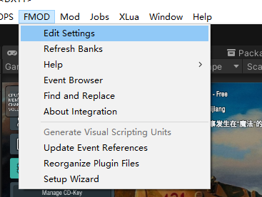
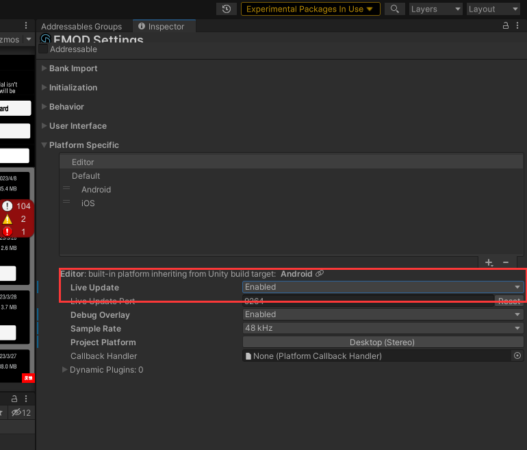
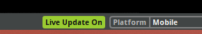
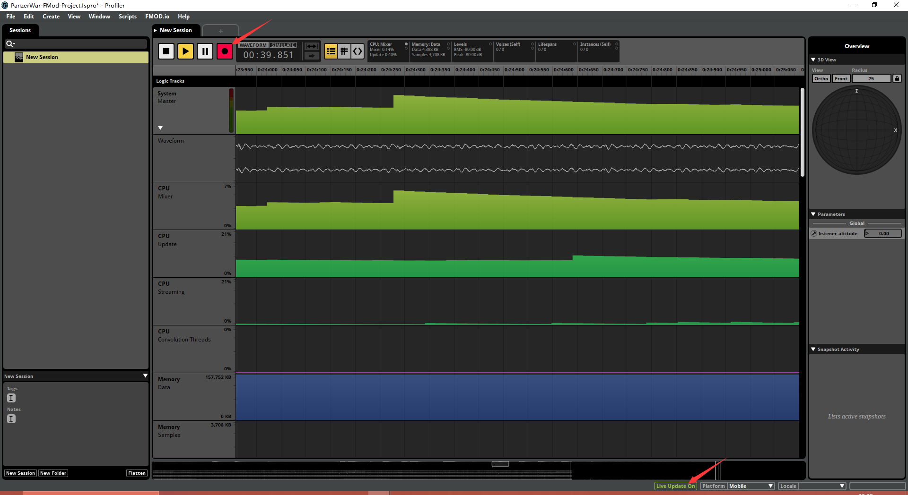

26-5. Fmod Profiler
Profiler 是 FMOD Studio 中的一个实用工具，可以实时查看 Unity 引擎中发生的音频事件、内存使用、CPU 使用等信息。要在 FMOD Studio 的 Profiler 中连接 Unity 引擎，请遵循以下步骤：
- 打开 FMOD Studio：启动 FMOD Studio 并打开你的音频项目。
- 打开 Profiler：在 FMOD Studio 的顶部菜单栏中，点击 "Window"，然后选择 "Profiler"。这将打开 Profiler 窗口。
- 启动 Unity：确保 Unity 项目已打开，并在 Unity 中加载包含 FMOD 插件的场景。
- 设置连接：回到 Unity，点击顶部菜单栏中的 "FMOD"，然后选择 "Edit Settings"。在 Inspector 窗口中，展开 "Live Update" 部分，并勾选 "Enable Live Update"。确保 "Live Update Port" 与 FMOD Studio Profiler 中的端口设置相匹配（默认为 9264）。
 
- 激活实时更新：在 FMOD Studio 的 Profiler 窗口中，点击 "Live Update" 按钮，确保它已激活。激活后，按钮的背景颜色应为绿色。这将允许 FMOD Studio 与 Unity 引擎实时同步音频数据。

- 连接 Profiler：现在，回到 FMOD Studio 的 Profiler 窗口。点击录制的圆形按钮

- 开始调试：现在，可以开始在 Unity 中运行你的场景。在 FMOD Studio 的 Profiler 窗口中，你可以实时查看 Unity 引擎中的音频事件、内存使用、CPU 使用等信息，从而更好地分析和调试音量问题。
检查音效
在 FMOD Studio 的 Profiler 中，可以通过以下方法对比并诊断音量问题：
- 检查事件的实时音量：在 Profiler 窗口的左侧栏中，可以查看正在播放的音频事件。选中其中一个事件，然后在右侧栏中可以看到该事件的实时音量数据。观察音量数据，检查是否有异常波动或值过低的情况。
- 使用 Mixer 查看音量：在 FMOD Studio 的顶部菜单栏中，点击 "Window"，然后选择 "Mixer"。这将打开 Mixer 窗口。在 Mixer 中，你可以查看不同总线的音量以及它们之间的关系。请注意，如果 Profiler 中的 "Live Update" 已连接到 Unity，Mixer 也会显示实时音量数据。检查各个总线的音量，以确保它们没有低于预期的值。
- 监听音频：在 Profiler 的 "Live Update" 已连接到 Unity 时，你可以实时收听 Unity 中播放的音频。这样，你可以直接比较 FMOD Studio 和 Unity 中的音频效果，并判断音量是否存在问题。
- 记录并分析：在 Profiler 窗口中，你可以点击 "Record" 按钮开始录制音频性能数据。录制完成后，你可以详细分析音量、CPU 使用、内存使用等数据，找出可能的问题所在。
- 对比预期效果：如果你有音频效果的预期结果（例如，之前的录音或参考音频），你可以将实时播放的音频与预期结果进行对比。这有助于判断音量是否有问题。
通过这些方法，你可以在 FMOD Studio 的 Profiler 中对比并诊断音量问题。请注意，音量问题可能源于 FMOD 项目设置、音频文件的初始音量、Unity 中的音量设置等多种原因。在诊断问题时，请全面检查各个方面的设置。